Grading: 2 points
| 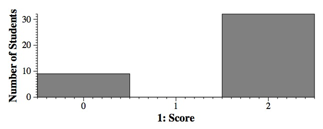 |
Grading: 2 points
| 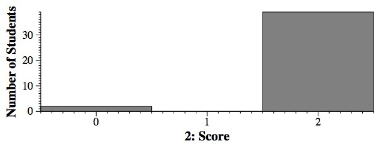 |
Question #3: The proper way to write this is to have it return a double, since an average is a floating point quantity. Its input should be a reference to a vector of ints, so that the vector is not copied when the procedure is called. Thus, the answer is B.
Grading: 3 points. 1.5 points for answering D.
| 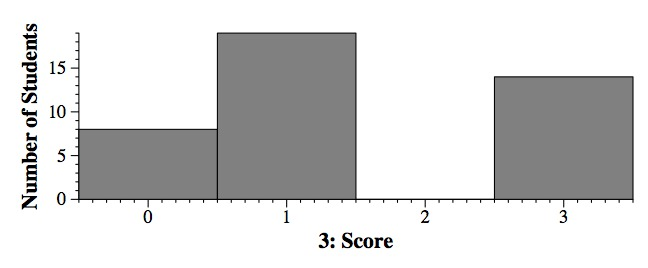 |
Question #4: The answer is:
C: Because that way, users of the class cannot mess with the data.
Grading: 3 points.
| 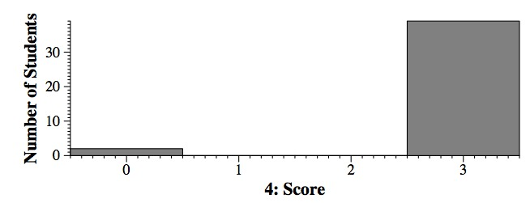 |
Grading: 3 points. 2 points for answering S. 1.5 points for answering Q. 1 point for answering O, R or T, 0.5 points for answering A, V or J.
| 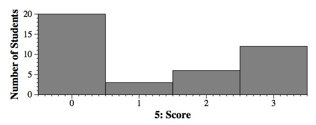 |
Question #6:
D: iss.clear(); iss.str(s); if (iss >> i) cout << i << endl;
Grading: 3 points. 1.5 points for answering F. 1 point for answering E.
| 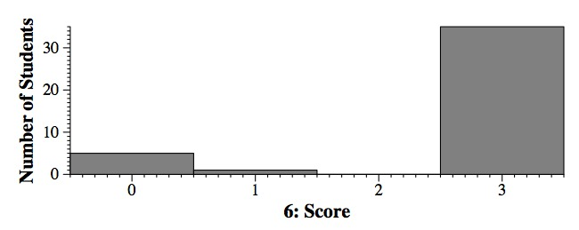 |
Question #7: E: Before any code: typedef vector <double> DVec; Then: vector <DVec> dv;
Grading: 3 points.
| 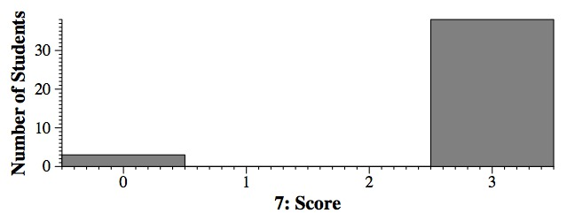 |
If you want to test it, it is in: q08.cpp.
Grading: 3 points. 1.5 points for answering H. 1 point for answering F.
| 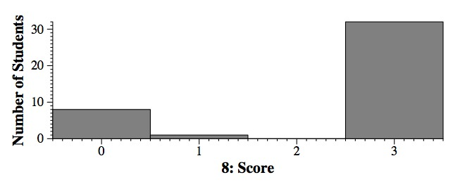 |
Grading: 3 points. 1 point for answering B, D, F, G, O or P.
| 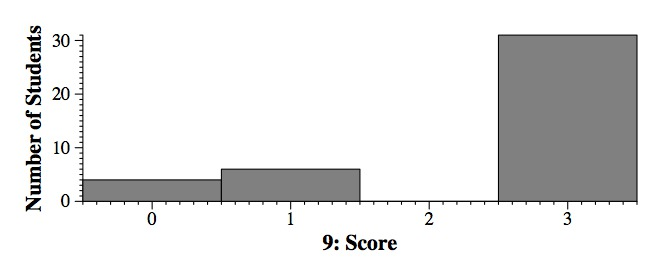 |
Question #10: cs and argv[1] point to the same C-style string. s1 and s2 are each copies. Thus, cs and argv[1] will point to "XBC." s1 will be "AYC" and s2 will be "ABCZ." The output is:
UNIX> q10 ABC XBC XBC AYC ABCZ UNIX>If you want to test it, it is in: q10.cpp.
Grading: 4 points, allocated as follows:
| 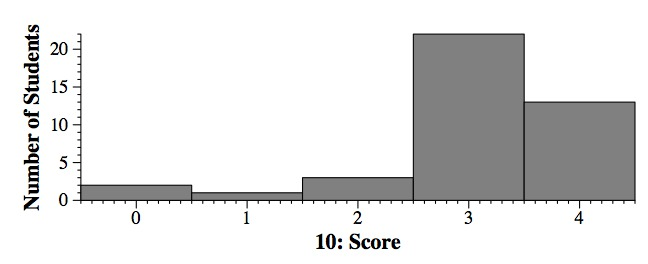 |
UNIX> q11 A CC ECE GCEG ICEGI UNIX> q12 CC ECE GCEG ICEGI ICEGI UNIX>
Grading: 4 points each.
| 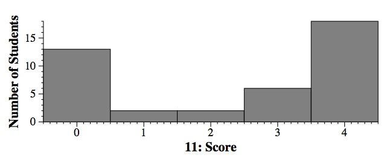 |
| 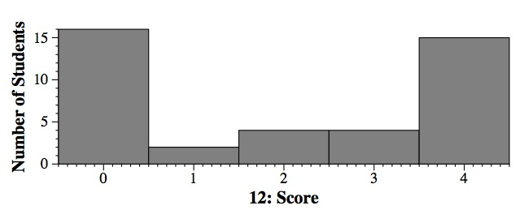 |
#include <vector>
#include <sstream>
#include <iostream>
using namespace std;
vector <int> i_like_tea(string &s)
{
istringstream ss;
vector <int> rv;
int i;
string str;
ss.str(s);
i = 0;
while (ss >> str) {
if (str.find('t') != string::npos || str.find('T') != string::npos) rv.push_back(i);
i++;
}
return rv;
}
|
The program in this directory, q13.cpp also has a main() that lets you test it.
Grading: 9 points, allocated as follows:
| 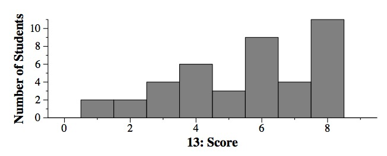 |